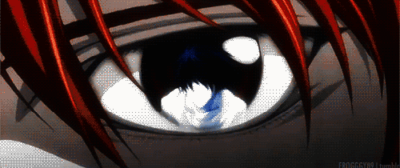
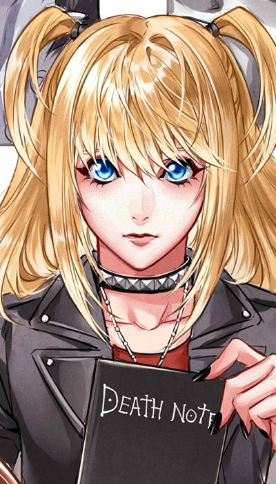

Considerações Iniciais
Esse é literalmente o melhor texto do site. Assim como o texto sobre Scott Pilgrim, os spoiler estão no meio do texto, isso porque eu considero esse texto de boa qualidade, e merece ser lido por completo. Não que os outros sejam ruins, mas esse, literalmente, é meu favorito.
E se?
O que você faria caso encontrasse um caderno da morte que é capaz de matar qualquer pessoa que tenha seu nome escrito nele? É uma pergunta um tanto quanto capciosa porque diz muito a seu respeito. Light Yagami, um estudante de ensino médio considerado o rapaz mais inteligente do Japão possui altas notas, responde com precisão as perguntas dos professores e é dedicado, porém, não encontra motivação e sua expressão é sempre de indiferença, o que reflete o tédio que constantemente sente. Um dia ele encontra um caderno no exterior e descobre seu uso ao ler as instruções escritas nele. Ele fica incrédulo e acha impossível que alguém morra de infarto em 40 segundos caso tenha o nome escrito no caderno enquanto o portador visualiza mentalmente o rosto da vítima
Quando tem a oportunidade de testar a veracidade do objeto fica intrigado ao perceber que de fato ele funciona, logo o personagem compreende a chance que têm acabar com todos os criminosos e se tornar o deus do novo mundo. Não demora e Ryuke (um Shinigami), verdadeiro dono do death note aparece para explicar que deixou o caderno cair no plano terrestre de propósito para se divertir um pouco, pois aparentemente o reino dos deuses da morte é bem tedioso.
Pouco tempo depois do protagonista iniciar seu objetivo de purificar o mundo, o número crescente de mortes inexplicáveis sobretudo em presídios chama a atenção do FBI, da Interpol e de um famoso detetive particular considerado o melhor do mundo. Inicialmente mantendo-se no anonimato, apenas identificando-se como L, o investigador faz rápidas e precisas deduções a respeito do assassino que consegue matar suas vítimas sem estar presente no local do crime.
Localização...Kanto, no Japão

Dividi esse momento em um subtítulo específico por um motivo. Um mísero fragmento da genialidade de L exposta ao mundo. Imagine que você é um detetive e está investigando uma série de suicídios ao redor do mundo que não parecem ter ligação. Você acredita que eles tem ligação e MAIS, acredita que os presos são obrigados a fazerem tal ato, ou seja, são assassinados, você não sabe por quem, não sabe como, e por enquanto não sabe onde. O que você faria para descobrir a região onde o assassino está localizado?
Bom, talvez você nem faça ideia de como fazer isso, mas L tem. Primeiro ele foi atrás do primeira morte de um criminoso que aconteceu de maneira misteriosa, e ela foi em Kanto, no Japão. L então deduz que o assassino POSSA estar lá (Ok, para uma coincidência de roteiro, ele estava, e mesmo se não estivesse, a tática seria replicada, até o momento em que o assassino fosse descoberto). Ele então pede para as redes de televisão anunciarem que uma transmissão seria feita para o mundo todo, na tal transmissão, um homem, sentado em um estúdio, vigiado por policiais, lê um roteiro que fala sobre como a polícia irá perseguir o Kira (nome criado pela internet para o Assassino) até o dia em que o encontrar.
Supondo que Kira é um sujeito com um ego imenso, L deduziu que ele não aguentaria ouvir aquelas baboseiras e mataria o homem. Dito e feito, 40 segundos depois, o homem tem um infarto e cai morto. Kira comemora a vitória, mas L é um pouco mais esperto. Aquele homem era um prisioneiro do corredor da morte, ou seja, uma hora ou outra ele acabaria morrendo de qualquer jeito. E, por mais que a TV tenha dito que a transmissão foi realizada no mundo todo, ela foi realizada apenas na região de Kanto, no Japão. Abaixo você confere a cena e a reação de Kira.
Matar ou não, eis a questão
Posteriormente, mesmo com a ameaça que o detetive representa e reconhecendo como um verdadeiro adversário, Light continua com seu objetivo de eliminar todos os criminosos, o que resulta em um legítimo jogo de gato e rato envolvendo questões sociais, certo e errado, definições de justiça e reviravoltas. O conceito do ditado popular “de boas intenções o inferno está cheio” nunca foi tão bem aplicado em um anime como em death note, e isso é certamente um dos fatores que explicam o sucesso. No caso da obra vejamos, Kira busca matar todos os marginais que existem pois acredita que assim está fazendo um favor à sociedade, e sendo honesto, será que não é verdade? Afinal, são bandidos, pessoas que cometeram crimes, assassinatos, roubos, estupros, elas merecem morrer. Esse é um debate extremamente delicado e polêmico.
Primeiro é preciso definir os parâmetros da discussão, levando em consideração que vivemos em sociedade, a definição de certo e errado consta nas leis, isto é, o que está dentro da lei é certo e o que está à margem dela é errado (Sim, estou ignorando algumas variáveis, como por exemplo: Se o que está na lei é o correto, e a escravidão era prescrita na lei, logo, a escravidão era correta?) nesse sentido, de maneira geral, matar é errado pois é um crime (Sim, estou ignorando uma outra variável. Matar não é errado SIMPLESMENTE por ser crime, existe um consenso em quase todas as sociedades que existiram de que matar por matar é algo que não se deve fazer, não é algo que necessariamente TEM que estar na lei). Contudo, essa discussão extrapola qualquer maniqueísmo que vá de encontro com a criação e os valores de cada um. Culturalmente falando é mais complicado Ainda, pois a cultura varia de povo para povo e muda com o passar dos anos, provavelmente nunca chegaremos a uma conclusão satisfatória acerca do assunto porque todos pensam diferente, mas talvez uma maneira de facilitar a resposta seja entendendo a lei como absoluta e responsável por manter a ordem. Dessa forma, se a pena de morte está prevista na constituição e é aplicada por agentes da lei ela é justa, se não é inadmissível. Dito isso, é fácil simpatizar com as ações do Kira.
Kira/Light
Em uma sociedade onde todo mundo está sujeito a ser alvo de bandidos, somos levados a crer que criminosos merecem morrer independente da justificativa, mas esquecemos que no caso do anime, um garoto qualquer decidiu pôr essa noção em prática sem o julgamento apropriado, sem o consentimento das autoridades e sem sofrer nenhum tipo de consequência. Kira se acha superior aos outros e acredita ser o único capaz de decidir o futuro dos indivíduos, porém, isso nem chega a incomodar em um primeiro instante, pois parece que está fazendo algo bom, aceitamos a motivação do personagem pois nos identificamos com ele no começo. Light não parece ser um rapaz ruim com tendências homicidas, na verdade, sua ambição era seguir seu pai, entrar na polícia e lutar por justiça, mas encontrar o death note obviamente não estava em seus planos e a partir desse momento o personagem nunca mais é o mesmo.
A degradação do personagem é gradual e muito orgânica, não é possível afirmar se ele tinha um lado negro adormecido e o caderno despertou ou se ele foi se transformando até atingir a decadência. Entretanto, é seguro afirmar que ele nem sempre foi o que era. O plano do Light realmente começa com boas intenções, tornar o mundo um lugar melhor mesmo que através de um método completamente extremo, sua perspectiva se baseava em “os meios justificam os fins”. Contudo, ao ser confrontado por alguém tão inteligente quanto ele, o personagem deixa de lutar, em tese, por uma boa causa e passa a agir por ego, se perde em meio a sua jornada por querer vencer a todo custo. Decidido a derrotar L, Light se mostra uma pessoa dissimulada, mentindo e passando por cima dos outros sem pudor, os manipulando e os usando para cumprirem sua vontade. De repente o seu sonho de construir um mundo melhor abre espaço para o seu desejo de subjugar seu inimigo.
L/Lawliet
Apesar de L possuir características peculiares que vão de encontro ao estereótipo de detetive e nos enganam a primeira vista, como o fato de ser viciado em doces, ficar o tempo todo sentado de maneira estranha acreditando que dessa forma terá maior capacidade intelectual, segurar objetos com as pontas dos dedos e andar sempre descalço e inclinado, a primeira aparição do L, embora através apenas de sua voz, é didática, serve para mostrar ao público a capacidade do detetiv. Depois de descobrir o país e região do assassino, ele não demora para perceber que o criminoso tenha acesso ao banco de dados da polícia e seja um estudante com artimanhas muito bem elaboradas. A cada episódio ele desvenda um pedaço do mistério sobre Kira até chegar no seu único suspeito, Light Yagami. A dinâmica entre os dois é muito interessante pois ao mesmo tempo que Light finalmente sabe quem é o L e tenta encontrar um jeito de mata-lo sem levantar mais suspeitas, percebe-se que L tem certeza de que Light é o culpado mas não consegue provar. O curioso é que os dois são bastante parecidos, em outras circunstâncias provavelmente teriam sido melhores amigos.
Vale ressaltar que ambos são capazes de utilizar métodos extremos para provar o seu ponto de vista e por isso não temos mocinhos ou vilões, Kira e L são claramente dois exemplos de anti-herói. Porém, o detetive não é inocente, se for preciso usar um sujeito condenado a sentença de morte para descobrir algo a respeito do caso ele usará, se for necessário prender uma garota que ele pensa estar envolvida com o serial killer mesmo sem provas suficientes para incrimina-la, ele aprenderá. A conclusão é que independente do que estão fazendo e de como estão fazendo se é certo ou errado ambos têm sua própria ideologia e estão dispostos a lutar por ela. Assim, Kira e L podem facilmente serem considerados dois lados de uma mesma moeda.
Misa/Ela não tem outro nome
Existe uma personagem que vale destacar. Lisa Amane, uma portadora do Death Note que também possui os “Olhos de Deus da Morte”. Esses olhos permitem que o usuário do caderno consiga enxergar o nome e data de nascimento de qualquer pessoa que ele(a) veja, porem, o portador(a) do caderno perde metade de seu tempo de vida. Light preferiu não adquirir os olhos pois imaginava que precisaria de muito tempo para consertar o mundo, já Lisa não teve esse mesmo pensamento.
A principal regra dos Shinigamis é: “Nós tiramos vidas, e não salvamos”, ou seja, se um Shinigami usa seu caderno para tirar a vida de alguém, ele morre. Vale destacar Lisa pois, em um certo momento do anime, L está próximo de descobrir que Lisa é uma portadora do caderno, e assim, ela seria condenada a pena de morte. Porem, Rem, o Shinigami que acompanhava Lisa, era apaixonado por ela, e não queria que isso acontecesse. Light consegue manipular Rem e fazer com que ele mate Watari (assistente de L) e o próprio L, se sacrificando pelo bem de sua amada. A questão que envolve Lisa e que, se ela quisesse, ela seria a Deusa do novo Mundo, já que por ter os Olhos de um Shinigami, ela é necessariamente muito mais perigosa que o próprio Light.
Lisa é completamente apaixonada por Light, e literalmente faz tudo que ele mandar, mesmo recebendo apenas um falso amor em troca. Lisa e Light formam o pior tipo de 'casal' que existe: Aquele que não se ama verdadeiramente, ou pelo menos no caso deles, um dos lados não ama o outro verdadeiramente.
Fim
Após se livrar de L, Watari e de Rem, Light vê seu caminho livre para concluir seu objetivo, o que acaba sendo frustrado por conta de Near e Mello, dois detetives prodígios que eram alunos de L no orfanato onde cresceram. O final do anime se torna uma quebra de expectativa. Dentre vários motivos, porque não respeita a essência do protagonista. Death note com certeza não se resume ao confronto entre L e Kira, mas certamente é o que mais chama a atenção na obra. A relação dos dois consegue evoluir para algo próximo da amizade e é tão natural que quando nos damos conta um está enxugando os pés do outro como símbolo máximo de humildade e talvez de aceitação da derrota, a conclusão do arco de ambos é marcante e muito comovente.
No fim, Near consegue que Light confesse que é o Kira, e ele, baleado e sangrando, sai correndo tentando escapar da polícia. Um ponto interessante são os flashbacks que aparecem na tela. Até o momento em que Light vê o seu próprio eu do passado caminhando pela rua, como uma espécie de miragem. Talvez esse momento mostre sobre como Light já estava desconexo de seu verdadeiro eu e como ele havia se tornado uma outra pessoa por conta do caderno. Ryuk agradece Light pelos anos em que o divertiu e escreve seu nome no caderno. Assim, Light Yagami, morre em uma escada. O fato dos dois personagens centrais da obra terem morrido deixou a maioria dos fãs tristes. Mas eu acho esse o final mais apropriado. Literalmente não houve vencedores, ambos morreram.
Considerações Finais
O Filme da Netflix é uma porcaria.